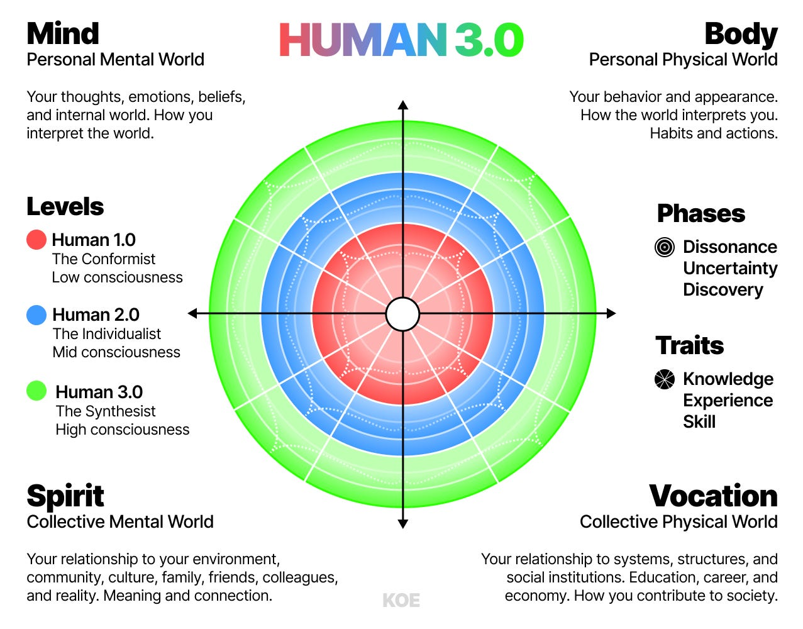

人类正在因为 AI 变蠢，以及如何比 99% 的 AI 使用者更聪明

当 MIT 发布那项名为 Your Brain on ChatGPT（你的大脑遇上 ChatGPT）的研究时，互联网彻底炸了。
简而言之，它证实了所有反 AI 人士一直在想的事情：
使用 AI 会让你变蠢。
研究发现，那些依赖 ChatGPT 的人，大脑神经连通性最弱、记忆留存率最低，而且即使停用 AI，这些影响依然持续存在。
微软和卡内基梅隆大学的另一项研究发现，过度依赖 AI 往往会导致分析性投入的下降和认知萎缩。
一如既往，你退一步，他们就进一步。你递给他们一项研究，他们看完标题就把答案锁死，彻底关闭了继续学习的大门。
AI 宗教是真实存在的。
有人相信 AI 是神，也有人相信它是魔鬼的造物。
有些社区不断强化着特定的信念和身份认同。人们无视证据和亲身经历，依然坚守自己对 AI 的看法，只会复述从"预言"和"先知"那里听来的东西。
你会在本文中看到，独立思考是使用 AI 的关键所在。所以如果你已经被"反 AI 宗教"洗脑、做不到独立思考，那这封信对你帮助不大——请自行离场。
而我们需要谈清楚的是：
AI 只会让你变蠢——前提是你本来就蠢。
如果你聪明，AI 有能力让你变得聪明得多。
如果你用 AI 用到现在，连自己的观点都形成不了，那这就是低意识水平的清晰信号。换句话说，你基本意识不到：骂 AI 使用者蠢其实是一种虚伪——你简直是在跟一面镜子说话。
AI 是巨大的放大器。
下面是如何借助 AI，变得比 99% 的人更聪明。
读到最后，你会知道：如何避免让自己的大脑融化、AI 为什么让 90% 的人变蠢，以及用 AI 变聪明的 3 种方式。
极度缺乏思考能力的人的特征
正如我们在 HUMAN 3.0 中讨论的，第一层（红色）思维的特征是：
- 服从权威或传统
- 思维狭隘，非黑即白
- 相信存在"唯一正确的路"——而这种信念往往来自社会规训
当低意识水平的人使用 AI（或妖魔化 AI）时，它放大的只是他们原本就有的东西。
就是这类人，试图让 AI 替他们创造一切：要求 AI 替他们写文章、写爆款内容、不经过自己努力就拿到答案，甚至告诉他们该怎么生活。
这里最刺眼的问题是：低意识水平的人同时也是低能动性的人。他们的目标是父母、老师和文化分配给他们的，而他们根本不在乎这些目标。上学、工作、退休——这些都没有意义。所以显然，这些人会试图抄近路。学习对他们来说不是乐趣，而是折磨；努力没有回报感，所以他们只投入刚好够混过去的最少力气。他们会抓住任何可以抄的近路，因为他们压根不在乎精通——在一个自己从未主动探索发现的领域里精通。
所以，我同意 AI 正在让人变蠢，但它没有让所有人变蠢。如果这一点还不能让你对"如此强大的工具如何改变你的人生"感到兴奋，那我也没什么好说的了。
而处在第三层思维的高意识水平的人，则利用 AI，让自己能更专注于自己生成的、有意义的目标。
他们把任务外包出去，释放认知容量，从而能思考更多、从更高的层面思考。他们用优雅的提示工程模拟自己的思维过程。他们牢牢把控自己的手艺，把 AI 左右自己方向的程度降到最低。我永远不会放弃写作，所以我必须留意 AI 介入其中的程度。但这不意味着我不把 AI 用于研究和模式匹配之类的事——它意味着我的写作流程已经改变了，开始从新工具中获益。
把这件事做好，需要你在生活方式上做出巨大转变。
几千年来，我们一直在做同样的事
纵观历史，人们一直习惯性地把自己的想法拿与其他聪明人的观点"校验"，以确认自己的想法站得住脚。
当你不确定该做什么时，你会读书、获取知识。
当你寻求建议时，你会去查专家意见，或者找聪明的朋友聊聊。
当你缺乏自信时，你会寻找鼓励你行动的证据。
（但这并不意味着其中任何一点都是真的，或是最好的做法。）
这根本不新鲜。
反 AI 人士每天都在这么做。
而且说个重磅消息：AI 能即时获取你几乎想找的任何知识和观点。这既危险，又强大。
举个例子，古希腊有各种相互竞争的哲学学府（比如柏拉图的学园、亚里士多德的吕喀昂学园），它们靠声誉和哲学立场吸引学生。人们奔向那些想法与自己共鸣、或生活方式让自己敬佩的老师；追随那些最能挑战自己思维、同时又契合自己目标的老师。
苏格拉底本人没有办学，但他会接待那些定期来找他进行这类对话的学生。
这件事在当下的体现就是创作者经济。思想流派比以往更多，你可以让自己的目标与极其聪明的人对齐。但许多尚未成长起来的人也会变得聒噪而干扰人——仅仅因为入门门槛只是一根网线。
这里有一个关键区别。
那些老师有真实的人生为他们的想法背书。他们在多个领域证明过自己——既是睿智的教师，也是出色的战士。他们能忍受苦难。
AI 做不到这一点。而且由于大多数 AI 工具都被调校成面向大众营销的消费级产品，它确实可能让你变蠢。但另一方面，AI 能很好地模拟推理和情感，因为这方面的例子海量存在。
那么，如何用一种让你变聪明而非变蠢的方式使用 AI？
很简单：做聪明人做的事——无论 AI 是否存在，他们都这么做：
你明白，任何形式教育的第一个教导，都应该是质疑那些教导本身。你把每个想法都放在"可能性"的范围内，让它接受现实的检验，然后才把它当作真理。
你不会因为某个权威人物说了，就相信一个想法或信念。
你不会因为他是苏格拉底，就照单全收他的建议。苏格拉底本人也会这么告诉你。天哪，苏格拉底甚至对书本持怀疑态度，因为他认为你应该学会自己推理。
在如何主导自己人生这件事上，你不会听从你的父母——他们可能并没有过上你想过的生活。你不会把政客、公共知识分子或任何有缺陷的人的话奉为法律。你尤其不会抓住"AI 是坏的"这个信念不放，让确认偏误不断加固它，直到你蠢得像块石头。
把你的思考外包给某个你眼中的"权威"人物（而"权威"本来就是无能者和不自信者的概念），向来都是个问题。
你绝不应该把能动性——也就是思考的责任——交给经过解读的人类权威。
你必须亲自挣得你的意识水平。
你必须亲自发现洞见——在追求一个自己生成的、最好是有意义的目标的过程中，通过知识的实际应用来发现。
而要做到这一点，就是用一个怀疑论者的视角去接近 AI，先实验再接受，并且愿意剥离那些不再服务于你的信念。
你可以、也应该去获取他人的知识，改进自己的决策（每一代人都在一个全新的进展基线上起步，因为知识被储存并代代相传），但这不意味着你抓住一个信念不放、阻止自己的心智继续成长——因为真理是相对于你的价值观和目标而言的，而这些几乎永远不会与别人完全对齐。
好消息是：如果你学会了使用 AI，你就能以前所未有的程度放大这个过程。
AI 如何让聪明人更聪明
让人变蠢的变量不是 AI。
你才是那个变量。你的意识水平。AI 不会在你使用的瞬间就强行把你变成蠢人——用这种眼光看问题本身就是蠢的。个人责任比以往任何时候都更重要。
- 第一层思维以"走捷径"为导向（"替我做这个"），因为他们还没有挣脱自己的规训
- 第二层思维以"地位"为导向（"帮我赚钱、提高生产力等等"），因为他们还没找到自己的手艺或天命
- 第三层思维以"精通"为导向（"帮我最大化我的潜力"），因为他们深深在乎自己的人生事业
第一层和第三层的核心区别，是对真理的追求。
第一层思维把"先天世界观"（出生时被分配、被规训出来的世界观）的价值观置于真理之上。
第二层思维把成功和地位置于真理之上。
这显然很危险，因为只要有任何价值观被置于真理之上——比如爱、金钱、学术界，甚至家庭——它就会腐朽，因为它建立在谎言之上。
宗教置于真理之上，导致因缺乏质疑而产生的教条思维。
金钱置于真理之上，导致科技 CEO 明知自己的算法在腐蚀孩子的大脑，却为了维持利润率而放任不管。
爱置于真理之上，导致新时代运动（new-age）的女性追逐那些给她最强烈感觉的男人，因为她只相信"爱"，便对这些男人幻想丛生；那些男人背叛她，她却自我煤气灯（gaslight），拒绝面对现实（真理）；然后迷失在虚假的精神性里，跑去火人节，用迷幻药寻求"一击顿悟"，最后加入一个邪教——那个邪教一边对她"爱的轰炸"，一边把她榨干。（这里有一个讲"真理"的精彩视频。）
第三层思维意识到：追求真理之外的任何东西，都会导致一场可怕的螺旋下坠，落入更深层的自我欺骗。
有了 AI，任何领域、话题、兴趣或情境中的这些虚假现实都成为可能。这令人恐惧。再说一遍：AI 是巨大的放大器。如果你生活在一个谎言的世界里（参考：纯粹的反 AI 阵营，和纯粹的亲 AI 阵营），AI 只会加速你坠入地狱。
话虽如此，许多聪明人正在用 AI 做他们从未做过的事。
他们读得更多了，因为 AI 能吐出大量基本准确的信息。你可以创造一本"属于你自己的书"——像一场由好奇心驱动的"选择你自己的冒险"游戏，去探索你想探索的特定主题。
我的一个朋友一直想写一本书，但从未开始，因为这看起来太令人望而却步了。
然后，他开始往 ChatGPT 里倒想法，一切开始说得通了：
- 他不想让 AI 替他写
- 他也不想要通用的写作指导——所以他清楚，不能只发模糊的提示词就指望得到有价值的东西
- 他把 Brandon Sanderson 的各种讲座加载进上下文
- 现在，他可以随时向最伟大的小说家之一请教，边写边学怎么写书——告别教程地狱和"脑内自慰"（空想代替行动）
- 他可以存下所有想法，只要一问就能取回任何一条——因为从来没有任何工具比 AI 更擅长管理知识
- 只要他保持怀疑的视角，这个新工具就能让他写出远超独自完成水平的书
- 而且，至少能让他行动起来——带来知识、技能、经验，最终爱上一个新爱好，而这个爱好可以变成职业
现实是，AI 让人们能更专注于重要的事：愿景、使命和目标……前提是他们真的有这些。
当我的朋友到了出版并推广这本书的时候——没有出版社，也没有一辈子的积蓄去投资编辑、封面画家和发行渠道——他可以借助 AI，以一个人做出更多的事。他现在就真的有可能做到这一点。这在 20 年前不可能。技术有明显的弊端，但"让你能追求梦想"绝不是其中之一。
我从 AI 中获益巨大的方式
为了简洁，我快速连发一些更好的 AI 用法。
大多数人使用 AI 的水平没有超出"消费者"。他们输入模糊的提示词，把它当搜索引擎用，或者莫名其妙地把它当男朋友用。大概是"感觉"置于真理之上吧。
1）思想伙伴
AI 是语言本身的编程语言。
意思是，你可以给它极其具体的指令，让它照做。
为了打造一个帮助我思考、而不是伤害我思考的思想伙伴，我不会像大多数人那样只说"做我的思想伙伴"。我会这样提示它：
- 先问出我想探索的话题，并附上我当下的一些想法
- 在我的想法和其他方法之间寻找模式
- 寻找反直觉的真相和对立的观点
- 追问我，把我还没凝练成形的概念逼出来
- 挑战那些笼统的断言，直到具体的洞见浮现
- 不要恭维我——只观察、挑战，或挖得更深
在整个过程中，AI 从不给我答案，也不提供解决方案——它鼓励我自己推理。
换句话说，我可以模拟一个聪明且持怀疑态度的人会怎么做，并在过程中改进自己的"大脑"。这就是提示工程的艺术。
我这里有一个例子。
2）智识架构与综合
如果你不相信 AI 是聪明的，那就把它关进"聪明人的语境"里。别把控制权交给那个带着创造它的大公司偏见的大模型。
首先，我可以上传我最喜欢的思想家的书、YouTube 视频和讲座。
或者，由于 AI 已经能获取其中大部分内容，我可以直接说：
"为 Daniel Schmachtenberger 的世界观创建一份'总指南'（master guide）。他所有的核心原则、应用场景、历史解读，以及任何能让 AI 理解他思维所有关键部分的内容。要尽可能彻底。"
我个人有很多位聪明人，随着时间推移塑造了我的世界观。我可以对每一位都做同样的事。然后我可以：
- 把他们全部装进一个新的对话
- 让 AI 找出他们之间的模式
- 综合他们的世界观——以及他们如何相互作用、在哪里一致、在哪里分歧
然后，我可以与他们其中任何一个人的世界观（或全部）对话，以发现自己世界观中的偏见和缺口。
读完他们所有的书、在杂乱无章的笔记软件里画遍所有地图、花 10 年和这些想法搏斗——这些都很有价值。但人只能记住那么多。我们的认知（和劳力）容量非常有限。这正是我们发明技术的原因：提升我们的潜能；让机器做我们做不到的事，从而让我们抽象到更"人"的一层。
事实上，我读过他们的书。这正是这件事强大的原因：我拥有这些知识，但现在我可以从各个角度给它打光。
除此之外，在对我所敬仰的各位思想家做完这件事之后，我终于理解了他们一些最复杂的概念。
所以，如果读书和与想法搏斗的目的是"理解"，而把信息裁剪成最适合你学习方式的样子能更快达成理解——那我把它看作一件大好事。
3）外化你的创造过程
我们多么愿意相信自己是超级有创造力、有艺术感的，但我们做的多数事情，其实都可以看作大脑里随时间变得更高效的神经通路。
这就是"技能"的本质。
如果你能细致地逆向工程你自己做事的方式（把无意识的变成有意识的），你就可以把那份认知负荷移交给 AI，让你上升到新的思维层面。
换句话说，想用 AI 把某件事做好，你自己仍然得知道怎么做。
另一方面，如果我热爱写作但讨厌营销，我可以找一个营销专家，用 AI 逆向工程他们的流程，把它变成一个提示词——现在我有了一个专家级员工，能替我做营销。我写过一份这方面的指南。
做一支优秀的 YouTube 视频、写一本好书，都有 100 种做法。
有知识的人做了成千上万条教程，来完成特定的任务。
如果你只是让 AI"做一个 YouTube 视频"，它大概率会取材于一篇流行的"怎么做"文章，产出一支糟糕的视频。由于你既不懂它是怎么做出来的，也不懂为什么没人看，你根本不知道如何让它变好。
但如果我已经付出了学习的努力、练习过、并且做出过一支优秀的 YouTube 视频，我可以：
- 把我为标题和封面图生成想法的完整思维过程，变成一个详细的提示词
- 记录是什么让我的视频风格表现好（那是和别人不同的东西），并让 AI 按观点密度、新颖视角、要点的冲击力给我的脚本打分
- 从我已经读过的书、视频和内容中，精准提取这支视频需要的东西——在我已经知道自己要什么的情况下，省掉几个小时的做笔记和翻找信息的时间
现在，我只要更专注于做我热爱的事——做视频。借助 AI 的力量，我还能让它们的质量比之前更高。
以上只是如何用更聪明的方式使用 AI 的几个例子，还有更多。
这些可以应用到任何领域。
更多例子留给以后的信吧，这封已经够长了。
—— Dan